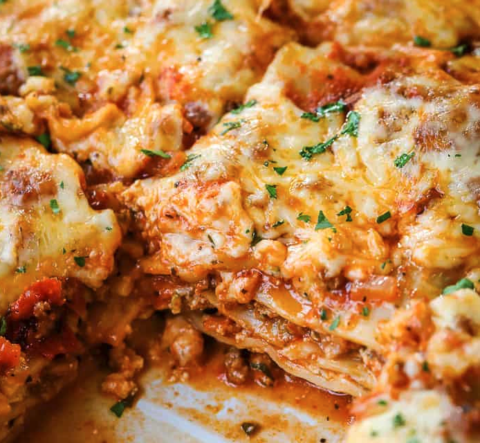

A classic, delicious dinner that every family should have in their recipe rotation. Simple ingredients, and an ever simpler process to make this amazing at home rendition of a popular dish at many world famous italian restaurants.
A heart American classic. This generational comfort food is a must for any family. Cheap, easy ingredients, and the slow cooker does all of the work for you!
What needs to be said? The perfect mac and cheese baked with a crispy, buttery crumb topping ideal for any gathering or just an easy dinner for the family.